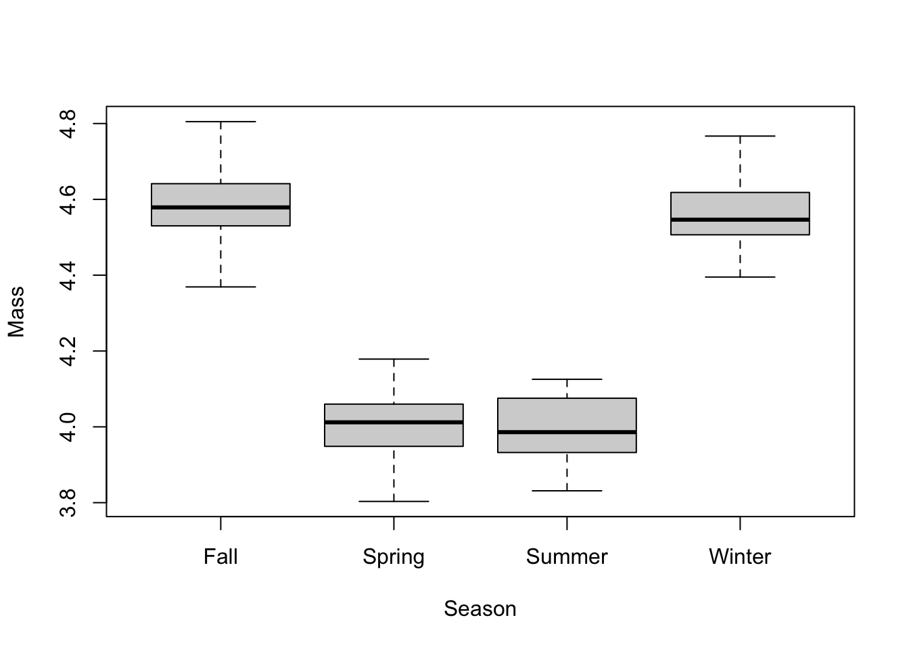
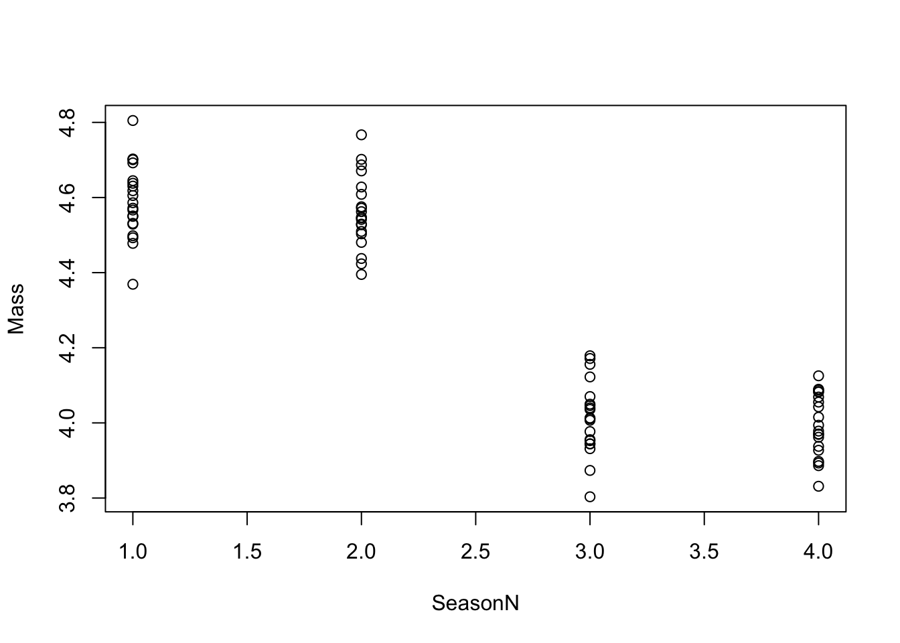

I asked you all to read Ruxton & Beauchamp (2008), and I’m not going to discuss it today in class. My goal was mostly to provide you all with some background context and considerations related to post-hoc tests before this lecture.
Last class we discussed ‘Analysis of Variance (ANOVA)’ – the classic test which partitions the total sum of squares in Y into both the error and the differences between the groups. This does the same thing as regression, but now we have categorical X variables.
If you only had two groups, you would just use a t-test – although we have learned that these are really the same thing and both just use a linear model.
Most of the lecture today is going to focus on historical approaches to using post-hoc tests. These studies often were experimental in nature, perhaps in agricultural settings, and involved setting up an experimental manipulation of something in the field. Those experiments often involved collecting data and then running an ANOVA.
The ANOVA result provide a single p-value – the significance of variable as a whole. Today we will look at data describing the mass of an animal across four seasons as an example. The single ANOVA p-value will give us the significance of this entire ‘season’ variable. Historically speaking, researchers would often respond to that p-value in two ways:
Post-hoc test – “after the fact” test
So you do an ANOVA, and then you need to do a post-hoc tests. How do you do that? First step, is to choose which post-hoc test to run. There are many!
Q: What are post-hoc tests that you are aware of??
Tukey test, Fisher’s Least Significance Difference test (aka, Fisher’s LSD), Dunnett, Schauffe, many others, etc.
Ruxton & Beauchamp (2008) identified 10 different post-hoc tests used in their survey.
The reason why there are so many post-hoc tests is folks are trying to find an optimal balance between the Type I error rate and Power” – our ability to detect a significant difference when one exists.
Ultimately, it should make sense that power and Type I error rate are inversely related. For example, let’s say we use a p-value of 0.01 as a cutoff. This decreases the chance that we will commit Type I error from 0.05 to 0.01, and we will be very unlikely to commit Type I error. But, we lose Power to detect significant differences when they likely exist! This balance represents a tradeoff between “getting things wrong” and “learning about differences”.
In an idea world when we do a post-hoc test, we would have a Type I error rate of 0.05 and also have some theoretically-determined maximum power. Statisticians at universities trying to get tenure try to develop their own post-hoc test to do this…
Tukey’s post-hoc test – has pretty good power! But it has a higher Type I error rate (0.06, 0.07). This causes weird circumstances where you had a marginally significant ANOVA (e.g., 0.049), but Tukey’s test fails to detect significant differences between pairwise comparisons.
All of the above tests try to balance this tradeoff, and all of them vary at it. And whichever one you choose is arbitrary. When you have a marginally significant result, you might start chasing pairwise significant results by using different post-hoc tests. Let’s try Tukeys! Oh, that didn’t work. Let’s try Schauffe’s! Nope, that didn’t work either. And then you try another, and it gives you two significant comparisons.
This causes us to go on a ‘fishing expedition’, which, in my opinion, is not a very good approach to science. We should use statistics to test specific a priori hypotheses that we have developed for a good reason – not go chasing after results we have no reason to suspect exist in reality. Ruxton & Beauchamp (2008) made comments to this effect a few times.
The strange thing is that no matter which post-hoc test you used, your results are all the same: the effects (betas) between groups have never changed, because post-hoc tests have not changed that. The confidence intervals and p-values will be similar. Was this marginally different inference worth your time and effort?
The main point I want to make here: don’t get too hung up on post-hoc tests. Instead, let’s focus on the estimates of effects, the confidence intervals, and is that statistically significant.
Tukey’s Honest Significant Difference (HSD) Test – harder to get significant differences, but less likely to commit Type I error.
To explore this, let’s use some data that I made in R. These data simulate the body mass of Greater Sage-grouse (Centrocurcus urophasianus). You can download it here, and a script to simulate it is included at the bottom of the page.
Picture: Bert Filemyr
Let’s take a look at it now.
# Load and examine the data
datum <- read.csv("lecture_10_seasons.csv")
head(datum)## Season error Fall Spring Summer Winter SeasonN Mass
## 1 Spring -0.056047565 0 1 0 0 3 3.943952
## 2 Spring -0.023017749 0 1 0 0 3 3.976982
## 3 Spring 0.155870831 0 1 0 0 3 4.155871
## 4 Spring 0.007050839 0 1 0 0 3 4.007051
## 5 Spring 0.012928774 0 1 0 0 3 4.012929
## 6 Spring 0.171506499 0 1 0 0 3 4.171506Y-variable – mass
X-variable – season (4 groups)
The data have the mass of animals measured in four different season: spring, summer, fall, and winter. We have a categorical X-variable “Season”, and also dummy-coded variables for each of the individual seasons.
Our goal is to estimate if mass of the animal is different between the seasons. How many comparisons might we need to make?
Here’s a trick to do it!
Fall Spring Summer Winter
In this case, we might have to do 6 pairwise comparisons.
Let’s write out our linear model:
\(Mass = \beta_0 + \beta_1 Spring + \beta_2 Summer + \beta_3 Winter + \epsilon \sim N(0, \sigma)\)
Review each of the betas
What are the ‘true’ values?
Let’s analyze these data in R:
# Plot the data
datum$Season <- factor(datum$Season)
plot(Mass ~ Season, data = datum)
# Fit a linear model
results <- lm(Mass ~ Season, data = datum)
summary(results)##
## Call:
## lm(formula = Mass ~ Season, data = datum)
##
## Residuals:
## Min 1Q Median 3Q Max
## -0.218925 -0.058779 -0.005103 0.057739 0.217000
##
## Coefficients:
## Estimate Std. Error t value Pr(>|t|)
## (Intercept) 4.58801 0.02091 219.402 <2e-16 ***
## SeasonSpring -0.57385 0.02957 -19.404 <2e-16 ***
## SeasonSummer -0.59313 0.02957 -20.056 <2e-16 ***
## SeasonWinter -0.02736 0.02957 -0.925 0.358
## ---
## Signif. codes: 0 '***' 0.001 '**' 0.01 '*' 0.05 '.' 0.1 ' ' 1
##
## Residual standard error: 0.09352 on 76 degrees of freedom
## Multiple R-squared: 0.9073, Adjusted R-squared: 0.9036
## F-statistic: 247.9 on 3 and 76 DF, p-value: < 2.2e-16Because we only have one variable (‘Season’), the p-value in the bottom right is the same as the p-value we would get running an ANOVA. This gives us the significance of the season variable as a whole: it tells us that at least two groups within this variale are different from each other.
When we examining the significance of effects within the model, we can see that mass in the Spring is different from Fall and that mass in the Summer is different from Fall.
Trick question: Is Winter different from Fall?
Yes, it is! We simulated it to have an effect of -0.05. However, we are not able to detect that effect with this statistical analysis. We need to be careful to not distinguish biological from statistical significance. We know that Winter is different from Fall, we made the data.
Q: If we wanted to be sure to detect this, what would we have to do? Increase our sample size.
Betas are all pretty close to truth.
Q: How would we test for the difference between Spring and Summer?
Change the reference.
# Fit a linear model
results2 <- lm(Mass ~ relevel(Season, ref="Summer"), data = datum)
summary(results2)##
## Call:
## lm(formula = Mass ~ relevel(Season, ref = "Summer"), data = datum)
##
## Residuals:
## Min 1Q Median 3Q Max
## -0.218925 -0.058779 -0.005103 0.057739 0.217000
##
## Coefficients:
## Estimate Std. Error t value Pr(>|t|)
## (Intercept) 3.99487 0.02091 191.038 <2e-16 ***
## relevel(Season, ref = "Summer")Fall 0.59313 0.02957 20.056 <2e-16 ***
## relevel(Season, ref = "Summer")Spring 0.01929 0.02957 0.652 0.516
## relevel(Season, ref = "Summer")Winter 0.56577 0.02957 19.131 <2e-16 ***
## ---
## Signif. codes: 0 '***' 0.001 '**' 0.01 '*' 0.05 '.' 0.1 ' ' 1
##
## Residual standard error: 0.09352 on 76 degrees of freedom
## Multiple R-squared: 0.9073, Adjusted R-squared: 0.9036
## F-statistic: 247.9 on 3 and 76 DF, p-value: < 2.2e-16Now we can see other differences: summer and spring, summer and winter.
We just have to re-run this one more time to get the final comparison that we need.
Let’s start by examining the help file for ‘TukeyHSD()’.
# Help file
help(TukeyHSD)
# Tukey requires an ANOVA output
results3 <- aov(Mass ~ Season, data = datum) # or
results3 <- aov(results)
summary(results3)## Df Sum Sq Mean Sq F value Pr(>F)
## Season 3 6.505 2.1683 247.9 <2e-16 ***
## Residuals 76 0.665 0.0087
## ---
## Signif. codes: 0 '***' 0.001 '**' 0.01 '*' 0.05 '.' 0.1 ' ' 1# This analysis is so simple that it doesn't even have a summary file. Run it directly.
TukeyHSD(results3)## Tukey multiple comparisons of means
## 95% family-wise confidence level
##
## Fit: aov(formula = results)
##
## $Season
## diff lwr upr p adj
## Spring-Fall -0.57384591 -0.65152888 -0.49616295 0.0000000
## Summer-Fall -0.59313401 -0.67081697 -0.51545105 0.0000000
## Winter-Fall -0.02735977 -0.10504273 0.05032319 0.7914826
## Summer-Spring -0.01928810 -0.09697106 0.05839487 0.9144606
## Winter-Spring 0.54648614 0.46880318 0.62416910 0.0000000
## Winter-Summer 0.56577424 0.48809128 0.64345720 0.0000000Let’s compare that to our original ‘lm()’ results:
summary(results)##
## Call:
## lm(formula = Mass ~ Season, data = datum)
##
## Residuals:
## Min 1Q Median 3Q Max
## -0.218925 -0.058779 -0.005103 0.057739 0.217000
##
## Coefficients:
## Estimate Std. Error t value Pr(>|t|)
## (Intercept) 4.58801 0.02091 219.402 <2e-16 ***
## SeasonSpring -0.57385 0.02957 -19.404 <2e-16 ***
## SeasonSummer -0.59313 0.02957 -20.056 <2e-16 ***
## SeasonWinter -0.02736 0.02957 -0.925 0.358
## ---
## Signif. codes: 0 '***' 0.001 '**' 0.01 '*' 0.05 '.' 0.1 ' ' 1
##
## Residual standard error: 0.09352 on 76 degrees of freedom
## Multiple R-squared: 0.9073, Adjusted R-squared: 0.9036
## F-statistic: 247.9 on 3 and 76 DF, p-value: < 2.2e-16The ‘diff’ is the difference between the groups. The first columns tells us those exact differences: e.g., “Spring - Fall”.
We can use the ‘lwr’ and ‘upr’ to calculate 95% CI, as we have done before.
Let’s look at the p-values.
Tukey’s causes p-values get larger.
Let’s look at confidence intervals:
TukeyHSD(results3)## Tukey multiple comparisons of means
## 95% family-wise confidence level
##
## Fit: aov(formula = results)
##
## $Season
## diff lwr upr p adj
## Spring-Fall -0.57384591 -0.65152888 -0.49616295 0.0000000
## Summer-Fall -0.59313401 -0.67081697 -0.51545105 0.0000000
## Winter-Fall -0.02735977 -0.10504273 0.05032319 0.7914826
## Summer-Spring -0.01928810 -0.09697106 0.05839487 0.9144606
## Winter-Spring 0.54648614 0.46880318 0.62416910 0.0000000
## Winter-Summer 0.56577424 0.48809128 0.64345720 0.0000000confint(results)## 2.5 % 97.5 %
## (Intercept) 4.54635952 4.6296571
## SeasonSpring -0.63274618 -0.5149456
## SeasonSummer -0.65203428 -0.5342337
## SeasonWinter -0.08626004 0.0315405Compare Spring-Fall from both outputs.
# Spring to Fall
(-0.63274618 - -0.5149456)/2 # LM## [1] -0.05890029(-0.65152888 - -0.49616295)/2 #Tukey## [1] -0.07768296Tukey causes confidence intervals to become wider.
Takehome: Both the p-values and confidence intervals have become artificially inflated.
Sometimes people take a categorical variable and they turn it into a continuous variable. This can be dangerous! Take a look:
# Look at the second to last column
head(datum)## Season error Fall Spring Summer Winter SeasonN Mass
## 1 Spring -0.056047565 0 1 0 0 3 3.943952
## 2 Spring -0.023017749 0 1 0 0 3 3.976982
## 3 Spring 0.155870831 0 1 0 0 3 4.155871
## 4 Spring 0.007050839 0 1 0 0 3 4.007051
## 5 Spring 0.012928774 0 1 0 0 3 4.012929
## 6 Spring 0.171506499 0 1 0 0 3 4.171506They then run a model with that as the predictor variable.
# Run a 'lm()' with that
results4 <- lm(Mass ~ SeasonN, data = datum)
summary(results4)##
## Call:
## lm(formula = Mass ~ SeasonN, data = datum)
##
## Residuals:
## Min 1Q Median 3Q Max
## -0.36979 -0.10921 -0.00098 0.12215 0.36118
##
## Coefficients:
## Estimate Std. Error t value Pr(>|t|)
## (Intercept) 4.87090 0.04114 118.41 <2e-16 ***
## SeasonN -0.23259 0.01502 -15.48 <2e-16 ***
## ---
## Signif. codes: 0 '***' 0.001 '**' 0.01 '*' 0.05 '.' 0.1 ' ' 1
##
## Residual standard error: 0.1502 on 78 degrees of freedom
## Multiple R-squared: 0.7545, Adjusted R-squared: 0.7514
## F-statistic: 239.8 on 1 and 78 DF, p-value: < 2.2e-16Season is significant! They write that in their paper and send it in for publication and they are done.
But they made a lot of errors here.
Q: What did R do?
It ran a regression with two continuous variables, X as a continuous variable. This assumes there is a linear relationship between 1, 2, 3, 4 and mass. That might be valid… but it isn’t!
# Scatterplot
plot(Mass ~ SeasonN, data = datum)
Q: How do we know it ran it as a regression?
It only gave us a single beta, and it only used 1 degree of freedom (should have been 3).
A post-hoc test… won’t work:
# Scatterplot
#TukeyHSD(aov(results4)) # doesn't work!
# Error in `TukeyHSD.aov()`:
# ! no factors in the fitted modelR is trying to tell us that ‘Season’ is not a number – it is a ‘factor’.
factor – a categorical X-variable
covariate – a continuous X-variable in a statistical model
Two terms we should be aware of.
We need to know that there are these things called ‘post-hoc tests’.
They try to maintain the ‘experiment-wide error rate’ (0.05 Type 1 error rate), and are still used a lot, particularly in classic agricultural or fisheries journals if you have done a manipulative experiment.
As you build more complicated models that have more complicated models (with both categorical and continuous variables), post-hoc tests won’t work.
Bonferonni corrections (basic math) can be used if absolutely necessary.
Here is code to simulate the data we analyzed in this lecture.
### Lecture 10: code to simulate data for post-hoc tests
# Set the seed for reproducibility
set.seed(123)
# Simulate X-variable
n <- 80
x <- factor(c(rep("Spring", n/4), rep("Summer", n/4), rep("Winter", n/4), rep("Fall", n/4)))
# Season as a numeric
SeasonN <- as.numeric(factor(x, levels = c("Fall", "Winter", "Spring", "Summer")))
# Simulate error
error <- rnorm(n, mean = 0, sd = 0.1)
# Create dummy-coded variables
dummy <- model.matrix(~ x - 1)
colnames(dummy) <- c("Fall", "Spring", "Summer", "Winter")
# Create the dataframe
datum <- data.frame(Season = x, error = error, dummy, SeasonN)
# Calculate Y-variable
y <- 4.6 - (0.6 * datum$Spring) - (0.6 * datum$Summer) - (0.05 * datum$Winter) + error
# Create dataframe
datum <- cbind(datum, Mass = y)
# Save the CSV file
write.csv(datum, "lecture_10_seasons.csv", row.names = FALSE)